Edition 06 · Phase 1 · Creative director · October 21, 2026
Strategy and direction board
Proposals only. Nothing here changes a master or a locked line. Each section opens with its recommendation, and the decisions close the board.
Option A proposal to accept or decline.
Defect fix Corrects a measured problem.
Illustrative Invented to show a pattern.
Reference, study only Your slides. Never traced or shipped.
Terms: the lockmark is the 3 by 3 grid of nodes beside the wordmark, with a red lever node at bottom right. A hinge headline joins two noun phrases with the red ampersand. The hinge divider, a hairline broken by a small ampersand, comes before "What you can do."
1 · Positioning and the brand idea
The hinge: a promise, then the action that keeps it
Recommendation. Make the hinge the organizing idea of the whole system Option. Your idea (DC-05) is a commitment, then action, and every locked line already has that shape.
Positioning
For people in every state who live under rules they rarely get to read, Oath & Action is a nonpartisan publication and set of tools. Its reader promise: "We explain how a decision is made and give you a practical way to take part." Claims carry a source and an evidence grade.
What sets it apart: every piece turns at the hinge divider to "What you can do," and every position is labeled.
The locked lines already share the hinge
Locked line, exact
Commitment
Action
"Help people understand and improve the rules that shape their lives."
understand
improve
"We explain how a decision is made and give you a practical way to take part."
explain how a decision is made
give you a practical way to take part
"Clarity is our duty. Action is our promise."
clarity, our duty
action, our promise
"A country that answers to its people."
The result when the loop closes
The pillars split at the hinge
Order as locked: Explain → Track → Connect → Act. After Track, the reader starts taking part.
Explain
Track
Connect
Act
Clarity is our duty.
Action is our promise.
The hinge diagram, drawn as a loop
Your mockups' arcs point both ways, which reads as an exchange. Run one way, they form a loop, in Atlas V7 "A chain of causes that returns to its starting variable." The atlas gives dotted and dashed lines to evidence grades, so the arcs are solid (D1-21).
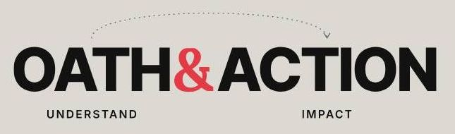
Original. V5 Polished, chapter 04.
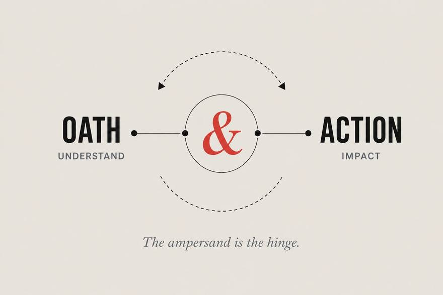
Reference, study only Hinge mockup.
Option The identity board's V2 hinge diagram: solid arcs, clockwise, UNDERSTAND and IMPACT below. Under 600 px its compact master drops the labels.
Loop R9, "Taking part in a successful repair may support the next one," Atlas V7, October 15, 2026. Its steps are conceptual, so they take the systems board's hollow line, with V7's grade word.
What the loop lets the brand claim
R9 has the brand's shape, and V7 calls it "a design hypothesis." Loop B4, "Electoral consequences can improve public performance," describes what the tagline names. So the brand presents its loop as a goal and says "can" about its effect.
What the ampersand joins
Your pairs as headlines that name a rule, with the V5 master ampersand. Each card is one view with one red.
The campaign pledge the roll call.
A commitment, then action
The zoning code the rent.
Cause and effect
The permit delay the by-right rule.
Problem and solution. Studio draft, pending the editor's redraft
Your signature the ballot question.
You and me
The compromise the law.
Common ground across the left and the right
House format for "you & me" piecesOption: arguments for and against, then each party's majorities, sourced, as the Program for Public Consultation does (research ledger I4).
Brand narrative (232 words)
Every public rule starts with people who promised to serve: a council that adopts a budget, a legislature that passes a bill. Then the rule reaches a household as a rent renewal, a pay stub, a ballot or a power bill.
Oath & Action follows that path for readers in every state. We read the rule and show who holds the decision. The record stays within reach while the decision moves. When it is time to act, we point to the office that answers for it and the step a reader can take.
The ampersand in our name is the hinge between a promise and the action that keeps it. It joins a rule to its result and a problem to the fixes on the table. It also joins people: you and a neighbor who lives under the same rule and may vote another way. Each of you gets the record and a way to take part.
The hinge turns in a loop. People who take part and see the result can hold the next promise to account, and the people who made it answer to them. Our tagline names that goal: "A country that answers to its people."
We are nonpartisan. When credible sources disagree, we show both readings and the evidence for each. When we take a position, we label it before the headline and summarize the strongest case against it.
2 · Audiences across the country
Six audiences and where each one starts
Recommendation. Give each product one lead audience, and test every product for fairness with officials of both parties.
Newcomers
Need
A plain answer to one question about their own life
Served by
Explainers and the atlas pathways, such as "Why did my rent go up?"
Engaged citizens
Need
To follow a decision and know when to act
Served by
Trackers and the weekly newsletter
Local organizers
Need
Who decides, the dates, accurate material to share
Served by
Act process pieces, scripts, the atlas view of who can act
Journalists and researchers
Need
Sources, grades, method and data to cite
Served by
Reports, the atlas Register, downloads, the method page
Officials and staff
Need
A fair account and a way to correct the record
Served by
Trackers, reports, the corrections page
Funders and partners
Need
Mission, method, evidence of use, safeguards
Served by
About and method pages, the position log
3 · Brand architecture
One masterbrand, with products named for what they do
Recommendation. Oath & Action signs everything and holds the only ampersand in any product name Option. The atlas, trackers and data never take a position.
Product and name rule
Explain
Track
Connect
Act
Publication: Oath & Action
Leads
Supports
Supports
Supports
Newsletter: Oath & Action, "the weekly briefing"
Leads
Supports
Supports
Ends every issue
Atlas: Who Do They Answer To? The Oath & Action Systems Atlas
Pathways
Register
Who can act
Reforms as options studied
Trackers: {Subject} Tracker, dated "as of"
Leads
Links to Act
Reports: Oath & Action Report {number}: {title}
Leads
Supports
Supports
Closing page
Explainers: "Reform 101 / Ranked-choice voting"
Leads
Hinge divider
Act pieces: "Act · How to take part" or "Our position"
Supports
Leads
Naming rules
Names describe the product. Only the atlas is a question.
No product name contains an ampersand. A partner's is written "and" (V5).
Every piece carries a content label, such as Explainer, Tracker or Report.
"Dispatch from the Front" becomes "Dispatch," as V5's kicker already says Option.
Drop "scorecards." Grading officials is an advocacy format.
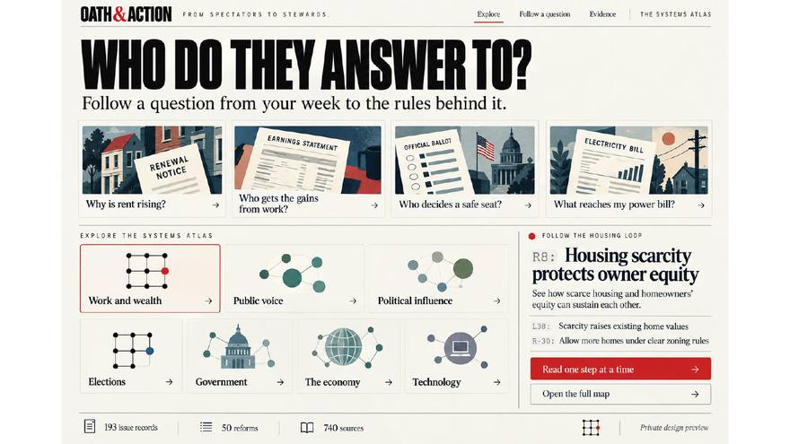
Reference, study only p24. Keep the question-first entry, which matches V7's pathways. Leave the dome.
4 · The lines
Give each locked line one job, and keep both candidates out of the tagline slot
This table belongs in 02 Voice; the uses sit in 01 and 08.
Locked line, exact
Role
Where
"A country that answers to its people."
Tagline: the result the loop works toward
Hero, back cover, newsletter ending
"Help people understand and improve the rules that shape their lives."
Mission
About page, grant material
"We explain how a decision is made and give you a practical way to take part."
Reader promise
Under the home masthead
"Clarity is our duty. Action is our promise."
Editorial commitment
Colophon, method and corrections pages
Explain → Track → Connect → Act
Pillar order
Navigation, four-dot row, grid corners
Voice line: I support the editor's revision B, which splits at the hinge. V5's stays in force until you approve (DC-04).
"From spectators to stewards."
Role: none. Record it in 01 Purpose as the founding line, beside V4.2's retirement record.
V4.2 marks it "Historical tagline" and "Retired from current applications." Your slides return it to the tagline slot (p01, p07, p13).
"From X to Y" is a contrasting pair, and it calls the newcomer a spectator.
It favors no party (design judgment).
"Democracy has a structure."
Role: the lockmark's explanatory line in 08 The Signal Grid and on the About page, followed by a sentence naming the lever.
Plain, and it names a mechanism. V5 says the lockmark "says that democracy has a locatable structure."
Some readers answer "democracy" with "a republic." Low risk here (untested judgment).
Fallback: "Every public decision has a structure."
5 · The Act pattern (DC-01)
Two kinds of Act piece, each labeled before the headline
The pattern lives in 13 Evidence and sourcing. Each mock spends its one working red on the ask (Rule 01.1).
Recommendation. A process piece names the step and takes no side. A position piece asks support for a named measure under the label "Our position" (editor's option A), with a fairness kit Option.
1 Act · How to take part
Alder County votes on backyard cottages March 9. Here is how to weigh in. Illustrative
Who decides
Five county supervisors. Three votes pass it. Illustrative
2 What each side has said
Supporters said more homes would ease rents. Opponents said sewers were sized for fewer homes. Illustrative
What you can do
Send a written comment by 5 p.m. Wednesday, March 3, 2027. Illustrative
Or speak for two minutes at 6 p.m. Tuesday, March 9, 2027. Illustrative
Follow the vote on the Accessory Homes Tracker. Illustrative
1Our position Act
State senate committees should post every vote within two days. Illustrative
We support S. 214, which would require it. Illustrative
What the record shows
Documented: 14 of 20 committees posted no roll calls last session. Source: Senate clerk's journal, 2026. Illustrative
2 The strongest case against
Chairs in both parties say posting every procedural vote would discourage early compromise and need new clerk staff. Sources: committee testimony, February 2027; clerk's estimate. Illustrative
What we don't know
Whether faster posting changes how members vote. Illustrative
3 Oath & Action supports S. 214. Read our explainer on it, which sets out the main arguments, before you decide.
4 Decided by the editorial board, February 26, 2027. No funder reviewed this piece. All positions: position log. Illustrative
Where the parts sit
1 Label first, above the headline, in Charcoal. Red stays on the ask.
2 Both readings, before the ask.
3 Disclosure, directly above the ask.
4 Who decided, when, funding.
What keeps a position piece fair
The label leads. On a shared card it holds the top-left corner.
The case against is written as its supporters would put it, sourced, at least a third of the argument's length.
Each claim keeps its evidence grade and a verb to match.
Opponents are named by office or role, never as a party villain.
Process facts match the neutral tracker word for word.
6 · Nonpartisan rule set
Twenty rules a producer can check
Recommendation. Adopt Rules 01.1 to 01.20 in 01 Purpose, one public set the other chapters cite Option. The IDs follow the architecture map and cannot collide with atlas IDs.
Rule 01.1 The wordmark's ampersand and the lockmark's lever are signature red and do not count. Each view (one screen, card, slide or printed page) then carries one working red, in this order of precedence: an error the reader must fix; the step a reader can take now; the one point the headline names, which in a systems figure is where a reform acts. A hinge headline's ampersand uses the view's working red. The hinge divider's ampersand is Charcoal. The Act handle is red only when the Act mark is itself the call to act, as on a social tile. Red never sits on Prussian.
Color
Rule 01.1 One working red per view, as set out above.
Rule 01.2 Two sides never take red against blue or Verdigris. Use Charcoal and Stone.
Rule 01.3 Diverging scales center on Newsprint, avoid red and blue, and name both ends in words.
Rule 01.4 Identity marks on Prussian use treatment D, one color White. Data graphics there keep Newsprint.
Rule 01.5 Maps never color places by party or result.
Imagery
Rule 01.6 Domes, columns and flags appear only in a captioned photograph of that place.
Rule 01.7 No party symbols, candidates or protest slogans, except as sourced evidence.
Rule 01.8 Photograph many kinds of people at public work, officials included.
Rotation
Rule 01.9 Per chapter, no V7 domain supplies over a quarter of examples, and no state over a fifth.
Rule 01.10 Rotate levels of government and regions.
Rule 01.11 When majorities of either party use a mechanism, show both, as in Loop R4a, "Majorities draw maps that help them keep control."
Rule 01.12 Log each example's domain, state and level, reviewed at each gate.
Language
Rule 01.13 Name the office. Name a party only when party is the mechanism, with a source.
Rule 01.14 No grievance framing: "the rule you are angry about," "rigged," "broken," "crisis."
Rule 01.15 No war or sports metaphors.
Rule 01.16 Contested claims show both readings at equal length.
Rule 01.17 A supporter of the current rule would accept its description.
Hinge pairs
Rule 01.18 Both halves share one color and weight. Only the ampersand is red.
Rule 01.19 People pairs share a rule, and their order rotates.
Rule 01.20 "Left," "right" or party names enter a hinge headline only to report a sourced agreement.
Rule 01.2 in practice
Written comments on one proposal Illustrative
Failure case
For, 212
Against, 187
Red against blue reads as party colors.
Correct
For, 212
Against, 187
Solid and hatched. It reads in grayscale.
7 · Art direction
What to take from your references
What the slides share: Newsprint, condensed capitals, one red serif ampersand, the grid at bottom right, Prussian panels, scenes of people. p07 recurs five times.
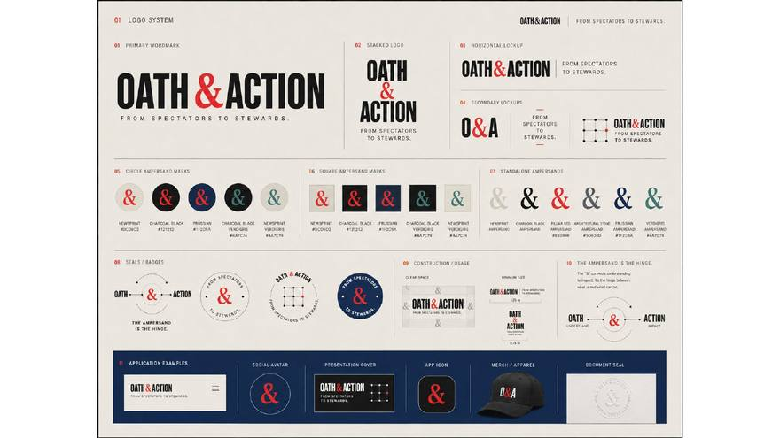
Condensed heavy wordmark
p01, p07, p08, p13, p40, banner
Take heavy capitals against a calligraphic ampersand: two kinds of letter, joined. The square poster uses a wide sans.
Avoid condensed capitals in every headline (p17, p40).
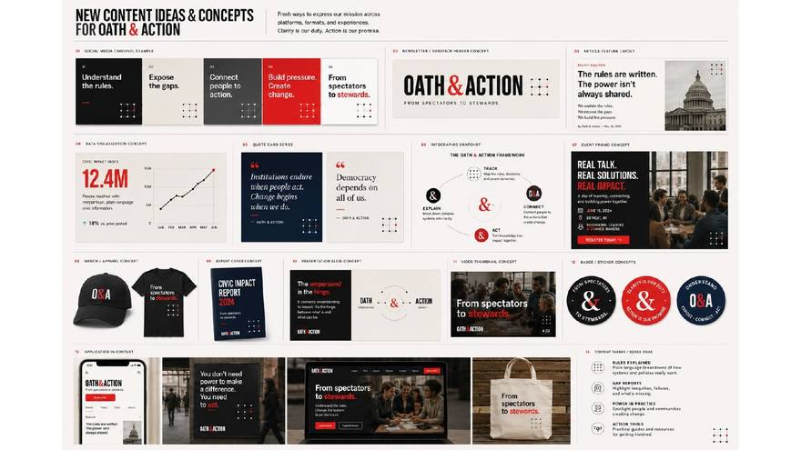
Serif red ampersand
p07, p15, p41
Take circle and square containers in one size system.
Avoid Verdigris or Stone ampersands (p07) and seals with a ring of words or "EST. 2026" (p03, p07, p41). V5: "Seals imply an authority we do not claim."
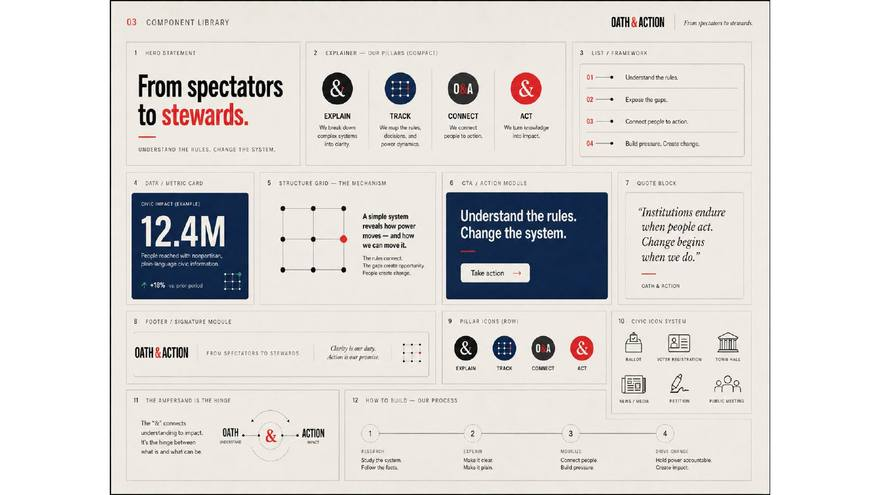
Hinge circle
p04, p07, p12, p41, mockups
Take the circle and its two pin dots, drawn as the identity board's V2 hinge diagram. It can become a wordless badge.
Avoid double arrowheads, dashed arcs, labels under 13 px.
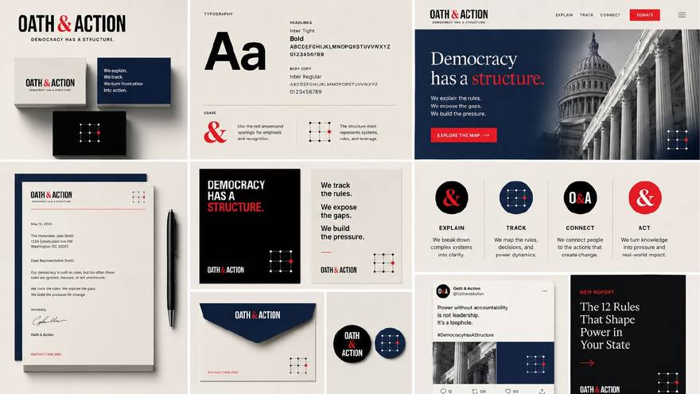
Pillar badges
p01, p04, p08, p40, p45
Take a navigation row in pillar order, drawn with Direction A's pillar marks (symbol board).
Avoid the ampersand as a pillar icon, Prussian beside red, and the names "Expose" and "Strengthen" (p01, p03, p17).
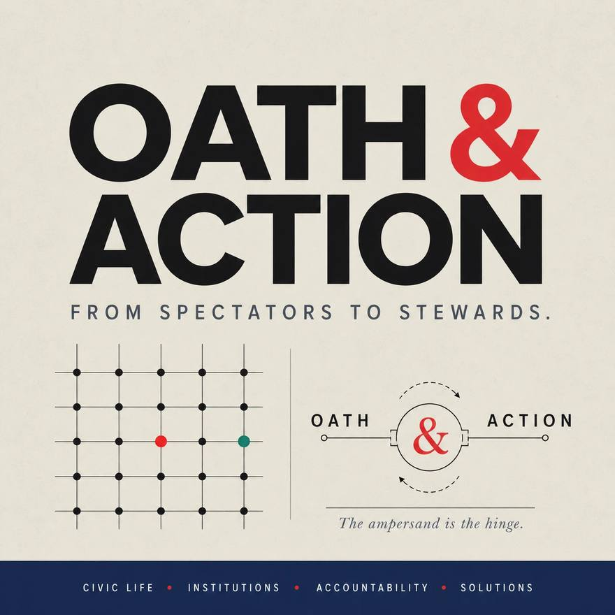
Signal Grid as pattern
p15, square poster
Take the node field at low density on covers and merchandise Option.
Avoid lit nodes in a pattern, pattern behind text, a 5 by 5 lockmark.
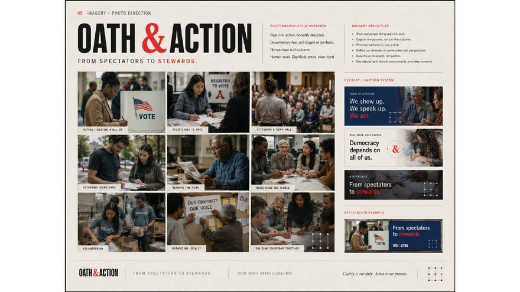
Documentary photography
p01, p05, p15, p17, p40
Take people doing the work, in black and white.
Avoid using any as a photograph: all are generated. Also flags as props (p05) and buildings without people (p03).
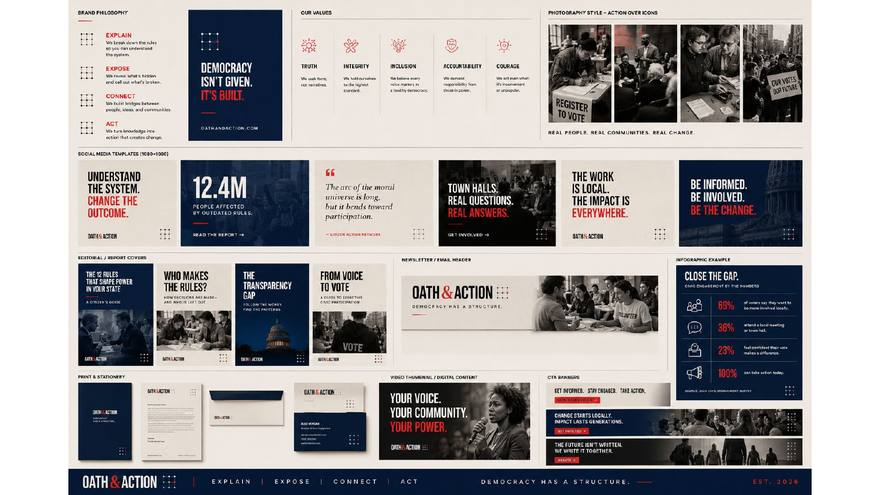
Editorial social templates
p01, p17, p40, p41
Take a fixed corner grid and numbered carousels (p41).
Avoid unsourced numbers such as "12.4M" (p01, p04, p17, p41), slogan triplets (p17, p40), all-red tiles (p40, p41).
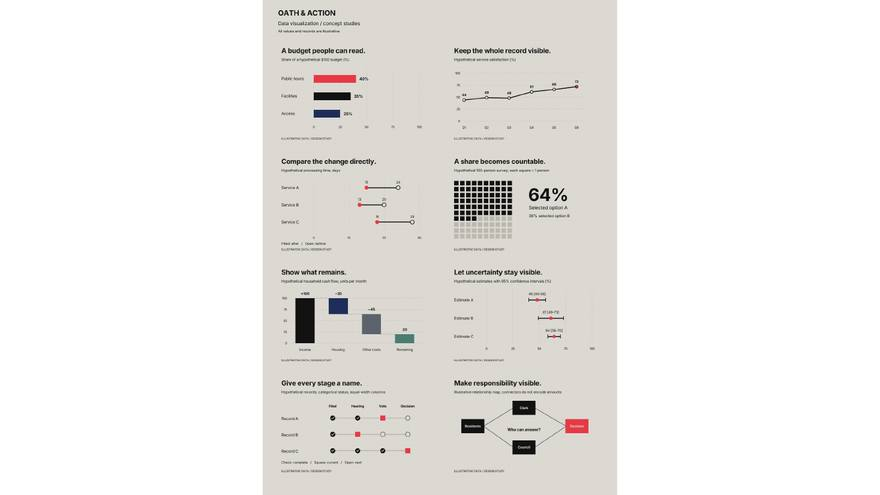
Data-led cards
p14 above all
Take a sentence title, the illustrative label inside each chart, red only on the point the title names.
Avoid icon-bullet percentages with a vague source (p17).
Clichés to avoid
The Capitol dome and columns (p03, p08, p24, p25, p41). Scales, stars, shields, the map silhouette and the handshake (p25). Megaphones (p15, p40). "Democracy is not a spectator sport" (p25). "Be the change" (p17).
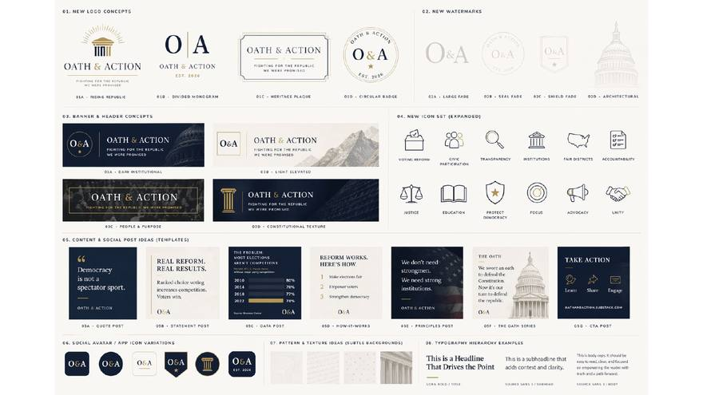
Reference, study only p25 gathers most of the clichés.
8 · Scores
Scores on the six rubric criteria
Criterion
Score
Reason, and the instruction when under 4
Craft
3
Sketches. Phase 2 rebuilds the Act layouts in guide tokens.
Clarity
4
Recommendations lead, and terms are defined up top.
Brand fidelity
4
Locked lines exact, the V5 master glyph in hinge headlines, one working red per view.
Usefulness
4
Numbered rules, naming patterns, a fairness kit. Tokens come in Phase 2.
Evidence honesty
4
Invented items labeled beside them, R9 keeps its grade, judgments say so.
Accessibility
4
axe-core 4.10.2 found no violations at 1440 or 390 px, text is 13 px or larger and every tab stop shows focus. Screen readers are untested.
Decisions for Gate 1
L: a locked element or identity geometry. It needs your approval by name after a side-by-side from 16 px to display size. V5 stays in force until then.